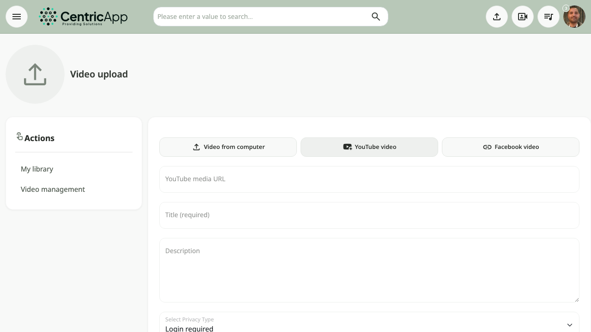
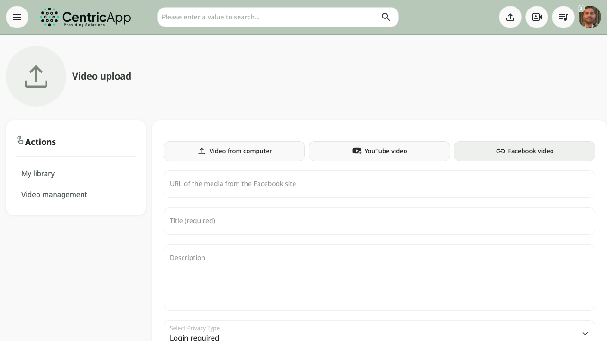
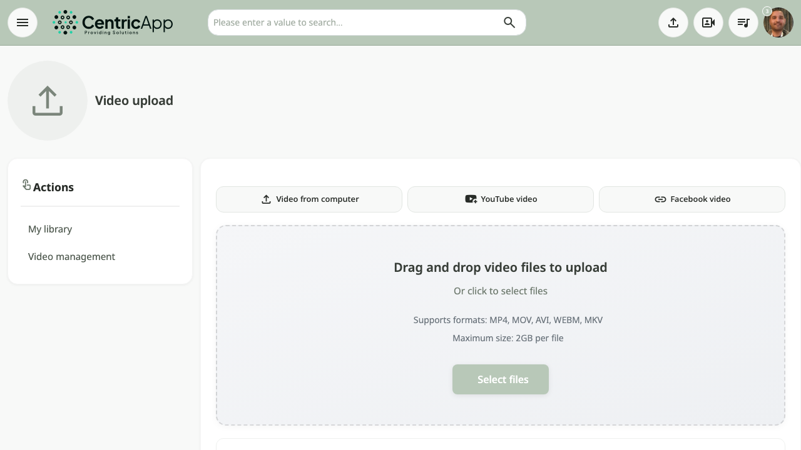

Overview
The Upload video page is available from the main menu (upload button) or at /videos/upload (e.g. https://dev.video/videos/upload). On this page you enter video details, choose files or a link, then click Save and upload.

Opening the page
In the top menu, click Upload video (or Upload). Users without upload permission will not see the option or will receive an access message.
Actions (sidebar)
On the left: links to My library and My videos (manage your uploads). Administrators also see Video management. Useful for returning to your list without leaving the upload form. See the My videos guide.
Media type
At the top of the form, source type options appear (according to system settings):
- Video from computer – upload a video file from your computer (drag and drop or choose files).
- YouTube video – enter a YouTube video URL (if enabled).
- Facebook video – enter a Facebook video URL (if enabled).
Choose one type; the relevant fields (drop zone or URL field) appear accordingly.

After clicking YouTube video, a field appears for entering the video URL:

After clicking Facebook video, a field appears for entering the video URL:

Upload from computer
When «Video from computer» is selected:
- Drop zone – drag video files into the area or click «Choose files» to open the file picker.
- Supported formats – e.g. MP4, MOV, AVI, WEBM, MKV (depending on settings).
- Maximum size – usually up to 2GB per file (may vary by plan).
After choosing files, a Selected files list appears with name, size, and status; you can remove a single file or click Clear all. A summary shows: number of files, total size, and estimated upload time.

Title, description, and privacy
Below the upload area:
- Title (required) – the video title shown in lists and search.
- General description – free-text description (optional).
- Privacy – access level: public, private, link, password, etc. (depending on settings).

Save and upload
After filling in the fields and choosing files (or entering a URL for YouTube/Facebook sources), click Save and upload. The button is active only when there are valid files (format and size).
During upload, a waiting dialog shows overall progress and progress per file. When finished — the system processes the videos; they will appear in My library and in My videos after processing completes.